СП 96.13330.2016 «Армоцементные конструкции»
О документе: разработчики, утверждение, регистрация, ключевые слова
СП 96.13330.2016
1 ИСПОЛНИТЕЛИ -Федеральное государственное бюджетное образовательное учреждение высшего образования «Национальный исследовательский Московский государственный строительный университет» (НИУ МГСУ) при участии ассоциации «Железобетон»
2 ВНЕСЕН Техническим комитетом по стандартизации ТК 465 «Строительство»
3 ПОДГОТОВЛЕН к утверждению Департаментом градостроительной деятельности и архитектуры Министерства строительства и жилищнокоммунального хозяйства Российской Федерации (Минстрой России)
4 УТВЕРЖДЕН приказом Министерства строительства и жилищнокоммунального хозяйства Российской Федерации от 16 декабря 2016 г. № 957/пр и введен в действие с 17 июня 2017 г.
5 ЗАРЕГИСТРИРОВАН Федеральным агентством по техническому регулированию и метрологии (Росстандарт). Пересмотр СП 96.13330.2011 «СНиП 2.03.03-85 Армоцементные конструкции»
В случае пересмотра (замены) или отмены настоящего свода правил соответствующее уведомление будет опубликовано в установленном порядке. Соответствующая информация, уведомление и тексты размещаются также в информационной системе общего пользования - на официальном сайте разработчика (Минстрой России) в сети Интернет
© Минcтрой России, 2016
Настоящий нормативный документ не может быть полностью или частично воспроизведен, тиражирован и распространен в качестве официального издания на территории Российской Федерации без разрешения Минстроя России
СП 96.13330.2016
Дата введения 2017-06-17
УДК 666.981 ОКС 91.080.40 58 0000
Ключевые слова: армоцементные конструкции, мелкозернистый бетон, проволочные сетки, композитные сетки, расчетные значения, прочностные характеристики бетона, требования к арматуре, расчет по прочности, расчет по образованию трещин и расчет по деформациям, защита конструкций от неблагоприятных воздействий
Директор НИИСФ РААСН \_\_\_\_\_\_\_\_\_\_\_\_\_\_\_\_\_ И.Л. Шубин
Руководитель организации-разработчика
Проректор НИУ МГСУ \_\_\_\_\_\_\_\_\_\_\_\_\_\_\_\_\_\_А.П. Пустовгар
Руководитель разработки Зав. кафедрой ТВВиБ, НИУ МГСУ \_\_\_\_\_\_\_\_\_\_\_\_\_\_\_\_\_\_Ю.М. Баженов
Исполнитель
Доцент кафедры ТВВиБ, НИУ МГСУ \_\_\_\_\_\_\_\_\_\_\_\_\_\_\_\_\_\_В.Г. Соловьев
Введение
Настоящий свод правил разработан с учетом обязательных требований, установленных в соответствии с Федеральным законом от 27 декабря 2002 г. № 184ФЗ «О техническом регулировании» и Федеральным законом от 30 декабря 2009 г. № 384-ФЗ «Технический регламент о безопасности зданий и сооружений».
Свод правил разработан авторским коллективом Федерального государственного бюджетного образовательного учреждения высшего образования «Национальный исследовательский Московский государственный строительный университет» (д-р техн. наук, проф. Ю.М. Баженов, В.Ф. Степанова, канд. хим. наук В.Р. Фаликман, канд. техн. наук В.Г. Соловьев ) при участии ассоциации «Железобетон» (д-р техн. наук, проф. А.И. Звездов , канд. техн. наук Б.С. Соколов, Д.В. Пасхин ).
1Область применения
Свод правил в развитие СП 63.13330 устанавливает требования к проектированию армоцементных конструкций - тонкостенных железобетонных конструкций (толщиной не более 30 мм включительно), изготовляемых из мелкозернистого бетона, в качестве арматуры в которых следует применять частые тонкие тканые, сварные или плетеные проволочные стальные сетки, равномерно распределенные по сечению элемента (сетчатое армирование), а также указанные сетки в сочетании со стержневой или проволочной арматурой (комбинированное армирование).
Свод правил устанавливает требования к проектированию армоцементных конструкций, предназначенных для работы при систематическом воздействии температуры не выше 50 о С и не ниже минус 70 о С.
Свод правил не распространяется на проектирование армоцементных конструкций, армированных сетками из композитных материалов, которое следует выполнять согласно специальным указаниям.
2Нормативные ссылки
В настоящем своде правил использованы нормативные ссылки на следующие документы:
ГОСТ 9.306-85 Единая система защиты от коррозии и старения. Покрытия металлические и неметаллические неорганические. Обозначения
ГОСТ 2715-75 Сетки металлические проволочные. Типы, основные параметры и размеры
ГОСТ 3826-82 Сетки проволочные тканые с квадратными ячейками. Технические условия
ГОСТ 7348-81 Проволока из углеродистой стали для армирования предварительно напряженных железобетонных конструкций. Технические условия
ГОСТ 13015-2012 Изделия бетонные и железобетонные для строительства. Общие технические требования. Правила приемки, маркировки, транспортирования и хранения
ГОСТ 13840-68 Канаты стальные арматурные 1×7. Технические условия
ГОСТ 14098-2014 Соединения сварные арматуры и закладных изделий железобетонных конструкций. Типы, конструкции и размеры
ГОСТ 19281-2014 Прокат повышенной прочности. Общие технические условия
ГОСТ 24297-2013 Верификация закупленной продукции. Организация проведения и методы контроля
ГОСТ 25192-2012 Бетоны. Классификация и общие технические требования
ГОСТ 26633-2015 Бетоны тяжелые и мелкозернистые. Технические условия
ГОСТ 27751-2014 Надежность строительных конструкций и оснований. Основные положения
ГОСТ 31384-2008 Защита бетонных и железобетонных конструкций от коррозии. Общие технические требования
ГОСТ Р 53772-2010 Канаты стальные арматурные семипроволочные стабилизированные. Технические условия
СП 20.13330.2011 «СНиП 2.01.07-85* Нагрузки и воздействия»
СП 28.13330.2012 «СНиП 2.03.11-85 Защита строительных конструкций от коррозии» (с изменением № 1)
СП 63.13330.2012 «СНиП 52-01-2003 Бетонные и железобетонные конструкции. Основные положения» (с изменениями № 1, № 2)
СП 96.13330.2016
СП 72.13330.2011 «СНиП 3.04.03-85 Защита строительных конструкций и сооружений от коррозии»
СП 112.13330.2011 «СНиП 21-01-97* Пожарная безопасность зданий и сооружений»
Примечание - При пользовании настоящим сводом правил целесообразно проверить действие ссылочных документов в информационной системе общего пользования - на официальном сайте федерального органа исполнительной власти в сфере стандартизации в сети Интернет или по ежегодному информационному указателю «Национальные стандарты», который опубликован по состоянию на 1 января текущего года, и по выпускам ежемесячного информационного указателя «Национальные стандарты» за текущий год. Если заменен ссылочный документ, на который дана недатированная ссылка, то рекомендуется использовать действующую версию этого документа с учетом всех внесенных в данную версию изменений. Если заменен ссылочный документ, на который дана датированная ссылка, то рекомендуется использовать версию этого документа с указанным выше годом утверждения (принятия). Если после утверждения настоящего свода правил в ссылочный документ, на который дана датированная ссылка, внесено изменение, затрагивающее положение, на которое дана ссылка, то это положение рекомендуется применять без учета данного изменения. Если ссылочный документ отменен без замены, то положение, в котором дана ссылка на него, рекомендуется применять в части, не затрагивающей эту ссылку. Сведения о действии сводов правил целесообразно проверить в Федеральном информационном фонде технических регламентов и стандартов.
3Термины, определения и обозначения
- 3.1.1 армоцемент
- Мелкозернистый бетон, в массе которого равномерно распределены тканые или сварные проволочные металлические либо неметаллические сетки.
- 3.1.2 армоцементные конструкции
- Тонкостенные железобетонные конструкции из мелкозернистого бетона с арматурой из частых тканых или сварных сеток из тонкой стальной проволоки или композитных материалов.
- 3.1.3 влажный режим помещения
- Режим помещения, при котором относительная влажность превышает 75 %.
- 3.1.4 композитная сетка
- Изделие, изготавливаемое из коррозионностойких композитных арматурных стержней круглого или иного сечения, пересекающихся друг с другом под разным углом и скрепленных в местах пересечения.
- 3.1.5 конструкционная огнезащита
- Способ огнезащиты, основанный на создании на нагреваемой поверхности конструкции теплоизоляционного слоя средства огнезащиты, не изменяющего свою толщину при огневом воздействии. Примечание - К конструкционной огнезащите относятся огнезащитные напыляемые составы, обмазки, облицовки огнестойкими плитными, листовыми и другими материалами, в том числе на каркасе, с воздушными прослойками, а также комбинации данных материалов, включая варианты с тонкослойными вспучивающимися покрытиями.
- 3.1.6 мокрый режим помещения
- Режим эксплуатации помещения, при котором поверхность строительных конструкций увлажняется капельножидкой влагой (конденсатом, обрызгиванием, проливами).
- 3.1.7 напыляемый огнезащитный состав
- Волокнистый или на минеральном вяжущем огнезащитный состав, наносимый на конструкцию методом напыления для обеспечения ее огнестойкости.
- 3.1.8 нормальный влажностный режим помещения
- Режим помещения, при котором относительная влажность воздуха имеет значения от 60 % до 75 % включительно.
- 3.1.9 сухой режим помещения
- Режим помещения, при котором относительная влажность воздуха не превышает 60 %.
- 3.1.10 тонкослойное огнезащитное покрытие (вспучивающееся покрытие, краска)
- Специальное огнезащитное покрытие, наносимое на нагреваемую поверхность конструкции, с толщиной сухого слоя, как правило, не превышающей 3 мм, увеличивающее многократно свою толщину при огневом воздействии. 3.2 В настоящем своде правил применены буквенные обозначения, приведенные в приложении А.
4Общие требования к армоцементным конструкциям
4.1Основные положения
Армоцементные конструкции в зависимости от их армирования подразделяют на конструкции:
- с сетчатым армированием - при их армировании частыми тонкими ткаными, сварными или плетеными проволочными стальными или композитными сетками, равномерно распределенными по сечению элемента (рисунок 4.1, а );
- с комбинированным армированием - при их армировании указанными сетками, равномерно распределенными по сечению элемента, в сочетании со стержневой или проволочной арматурой (рисунок 4.1, б ).
Рисунок 4.1 - Армирование армоцементных конструкций
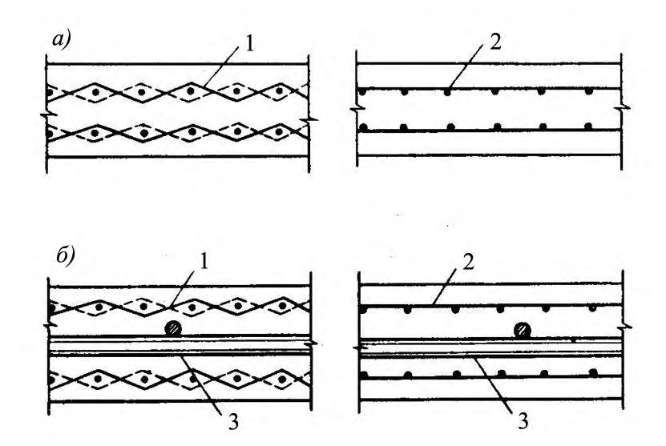
а - сетчатое; б
- комбинированное;
1 - частые тонкие тканые сетки; 2 - частые тонкие сварные сетки; 3 -стержневая или проволочная арматура
СП 96.13330.2016 повышенной влажности и т. п.), необходимо соблюдать дополнительные требования, предъявляемые к таким конструкциям соответствующими нормативными документами.
Применение армоцементных конструкций со стальной арматурой в среде со слабой степенью агрессивного воздействия на железобетонные конструкции допускается при выполнении требований, установленных СП 28.13330 для таких конструкций.
Армоцементные конструкции рекомендуется применять в элементах зданий и сооружений, для которых существенное значение имеют снижение собственного веса, уменьшение раскрытия трещин и обеспечение водонепроницаемости бетона.
Форма и размеры элементов должны принимать исходя из наиболее полного учета свойств армоцементных конструкций, возможности заводского механизированного изготовления, удобства транспортирования и монтажа конструкций.
Для обеспечения совместной работы армоцементной опалубки и монолитного бетона на поверхности армоцементной опалубки должны быть выполнены пазы шириной до 10 мм, глубиной до 5 мм с шагом до 100 мм, а поверхность армоцементной опалубки должна быть очищена от грязи, льда и
СП 96.13330.2016 снега, обработана стальной щеткой и обдута сжатым воздухом. Для связи арматуры несъемной армоцементной опалубки с основной арматурой конструкции необходимо предусматривать в опалубке выпуски сеток и стержней.
Рабочая документация на армоцементные конструкции должна содержать указания по способам их транспортирования, складирования и монтажа, а также в необходимых случаях точки передачи усилий на конструкцию.
СП 96.13330.2016 армоцементные конструкции пролетом выше 12 м при армировании арматурой классов В , Вр и К допускается проектировать только при специальном экспериментальном обосновании.
4.2Основные расчетные требования
- дисперсность армирования;
- тонкостенность конструкций;
- уменьшенный защитный слой бетона.
Расчеты должны обеспечивать надежность армоцементной конструкции в течение всего срока службы здания или сооружения с учетом их уровня ответственности, а также при производстве работ в соответствии с требованиями, предъявляемыми к ним.
Расчеты по предельным состояниям первой группы включают расчет:
- по прочности;
- устойчивости формы (для тонкостенных конструкций);
- устойчивости положения (опрокидывание, скольжение, всплывание).
Расчеты по прочности армоцементных конструкций следует производить исходя из условия, по которому усилия, напряжения и деформации в конструкциях ввиду различных воздействий с учетом начального напряженного состояния (преднапряжение, температурные и другие воздействия) не должны превышать соответствующих значений, установленных нормативными документами.
Расчеты по устойчивости формы конструкции, а также по устойчивости положения (с учетом совместной работы конструкции и основания, их деформационных свойств, сопротивления сдвигу по контакту с основанием и других особенностей) следует производить согласно указаниям нормативных
СП 96.13330.2016 документов на отдельные виды конструкций. В отсутствие таких указаний следует принимать минимальный коэффициент запаса: по устойчивости формы равным 3; на опрокидывание равным 1,5 при наиболее неблагоприятных значениях коэффициентов надежности по нагрузке.
При необходимости в зависимости от вида и назначения конструкции должны быть произведены расчеты по предельным состояниям, связанным с явлениями, при которых возникает необходимость прекращения эксплуатации здания и сооружения (чрезмерные деформации, сдвиги в соединениях и другие явления).
Расчеты по предельным состояниям второй группы включают расчет:
- по образованию трещин;
- раскрытию трещин;
- деформациям.
Расчет армоцементных конструкций по образованию трещин следует производить исходя из условия, по которому усилия, напряжения или деформации в конструкциях ввиду различных воздействий не должны превышать соответствующих предельных значений, воспринимаемых конструкцией при образовании трещин.
Расчет армоцементных конструкций по раскрытию трещин производят исходя из условия, по которому ширина раскрытия трещин в конструкции ввиду различных воздействий не должна превышать предельно допустимых значений, устанавливаемых в зависимости от требований, предъявляемых к конструкции, условий ее эксплуатации, воздействия окружающей среды и характеристик материалов с учетом особенностей коррозионного поведения арматуры.
Расчет армоцементных конструкций по деформациям следует производить исходя из условия, по которому прогибы, углы поворота, перемещения и, в необходимых случаях, амплитуды колебания конструкций ввиду различных воздействий не должны превышать соответствующих предельно допустимых значений.
СП 96.13330.2016
Для конструкций, в которых не допустимо образование трещин, должны быть указаны и соблюдены требования по отсутствию трещин. В этом случае расчет по раскрытию трещин не производят.
Для остальных конструкций, в которых допустимо образование трещин, расчет по образованию трещин производят для определения необходимости расчета по раскрытию трещин и учета трещин при расчете по деформациям.
Нагрузки, учитываемые при расчете армоцементных конструкций по образованию и раскрытию трещин, следует принимать согласно указаниям п. 4.2.4, а учитываемые при расчете по деформациям - СП 63.13330.
В остальных армоцементных конструкциях образование трещин допустимо, и к ним в зависимости от условий, в которых работает конструкция, и от вида применяемой арматуры предъявляют требования по ограничению ширины раскрытия трещин. Предельные значения допустимой ширины
СП 96.13330.2016 раскрытия трещин в армоцементных конструкциях со стальной арматурой приведены в таблице 1.
Расчет армоцементных элементов следует производить по продолжительному (при совместном действии постоянных и длительных нагрузок) и по непродолжительному (при совместном действии постоянных, длительных и кратковременных нагрузок) раскрытию нормальных и наклонных трещин.
Нагрузки, учитываемые при расчете армоцементных конструкций по образованию и раскрытию трещин, должны принимать согласно таблице 2.
Требования к трещиностойкости армоцементных конструкций относятся к нормальным и наклонным к продольной оси элемента трещинам.
Во избежание раскрытия продольных трещин следует принимать конструктивные меры (установка соответствующей сетчатой арматуры), а для предварительно напряженных элементов должны быть ограничены значения сжимающих напряжений в бетоне в стадии предварительного обжатия (см. 4.3.4).
Для конструкций, методика расчета которых с учетом неупругих свойств армоцемента не разработана, усилия в статически неопределимых конструкциях допустимо определять в предположении их линейной упругости.
Значения предельно допустимых прогибов следует принимать согласно СП 20.13330 и нормативным документам на отдельные виды конструкций.
Таблица 1 - Предельно допустимая ширина раскрытия трещин
| Предельно допустимая ширина a crc,ult , мм, продолжительного/непродолжительного раскрытия трещин при армировании | Предельно допустимая ширина a crc,ult , мм, продолжительного/непродолжительного раскрытия трещин при армировании | Предельно допустимая ширина a crc,ult , мм, продолжительного/непродолжительного раскрытия трещин при армировании | Предельно допустимая ширина a crc,ult , мм, продолжительного/непродолжительного раскрытия трещин при армировании | Предельно допустимая ширина a crc,ult , мм, продолжительного/непродолжительного раскрытия трещин при армировании | |
|---|---|---|---|---|---|
| комбинированном | комбинированном | комбинированном | комбинированном | ||
| Условия работы элементов конструкций | сетками и стержневой арматурой классов А240, А400 А500 и с проволочной арматурой классов В500 и Вр500 | оцинкованным и сетками, и оцинкованной проволочной арматурой классов от Вр1200 до Вр1500, и канатной К7 | сетчатом | сетками и стержневой арматурой класса А600, А800, с проволочной арматурой классов от В1200 до Вр1500, канатной К7 при диаметре проволоки 4 мм и более | сетками и стержневой арматурой класса А1000, с проволочной арматурой классов от В1200 до Вр1500, канатной К7 при диаметре проволоки менее 4 мм* |
| Элементы 1 С полностью растя- нутым или частично сжатым сечением, воспринимающие давление жидкостей или газов | 0,05 0,03 | 0,05* 0,03 | 0** 0 | 0 0 | 0 0 |
| 2 Эксплуатируемые в отапливаемых зданиях с влажным или мокрым режимами помещений, а также на открытом воздухе и в неотапливаемых зданиях в условиях увлажнения | 0,1 0,05 | 0,12 0,06 | 0** 0 | 0 0 | 0 0 |
| 3 Эксплуатируемые в отапливаемых зданиях нормальным влажностным режимом помещений | 0,15 0,1 | 0,15 0,1 | 0,07 0,05 | 0,07 0,05 | 0 0 |
| 4 Эксплуатируемые в отапливаемых зданиях с сухим режимом помещений и при отсутствии возможности систематического увлажнения конструкции конденсатом | 0,2 0,15 | 0,22 0,15 | 0,15 0,1 | 0,15 0,1 | 0,05 0,03 |
Таблица 2 - Нагрузки и коэффициент надежности по нагрузке
| Требования к трещиностойкости армоцементных конструкций | Нагрузки и коэффициент надежности по нагрузке f , принимаемые при расчете | Нагрузки и коэффициент надежности по нагрузке f , принимаемые при расчете | Нагрузки и коэффициент надежности по нагрузке f , принимаемые при расчете |
|---|---|---|---|
| Требования к трещиностойкости армоцементных конструкций | по образованию трещин | по раскрытию трещин | по раскрытию трещин |
| Требования к трещиностойкости армоцементных конструкций | по образованию трещин | непродолжительному | продолжительному |
| Отсутствие трещин | Постоянные, длительные и кратковременные нагрузки при f 1, принимаемом как при расчете по прочности | - | - |
| Образование трещин допускается | Постоянные, длительные и кратковременные нагрузки при f = 1 (расчет производится для выяснения необходимости проверки по раскрытию трещин) | Постоянные, длительные и кратковременные нагрузки при f = 1 | Постоянные и длительные нагрузки при f = 1 |
| Примечание - Особые нагрузки учитывают при расчете по образованию трещин в тех случаях, когда наличие трещин может привести к катастрофическому положению (взрыв, пожар и т. п.). | Примечание - Особые нагрузки учитывают при расчете по образованию трещин в тех случаях, когда наличие трещин может привести к катастрофическому положению (взрыв, пожар и т. п.). | Примечание - Особые нагрузки учитывают при расчете по образованию трещин в тех случаях, когда наличие трещин может привести к катастрофическому положению (взрыв, пожар и т. п.). | Примечание - Особые нагрузки учитывают при расчете по образованию трещин в тех случаях, когда наличие трещин может привести к катастрофическому положению (взрыв, пожар и т. п.). |
Среднюю плотность мелкозернистого бетона, учитываемую при расчете армоцементных конструкций, следует принимать равной 2300 кг/м³ . Средняя плотность армоцемента, армированного стальными сетками, при двух сетках принимают равной 2400 кг/м³ ; при наличии большего числа сеток среднюю плотность армоцемента следует увеличивать на 50 кг/м³ на каждую дополнительную сетку; при наличии данных о средней плотности армоцемента допускается принимать другие значения, обоснованные в установленном порядке.
4.3Дополнительные указания по проектированию предварительно напряженных конструкций
Сетки в сечении преднапряженных армоцементных конструкций следует учитывать в схеме усилий так же, как ненапрягаемая арматура.
СП 96.13330.2016
В элементах, рассчитываемых на воздействие многократно повторяющейся нагрузки, образование таких трещин не допускается.
Значения bp определяют на уровне крайнего сжатого волокна бетона с учетом потерь предварительного напряжения арматуры по СП 63.13330.
5Материалы для армоцементных конструкций
Материалы, применяемые для изготовления армоцементных конструкций, должны соответствовать требованиям действующих нормативных
СП 96.13330.2016 документов, иметь сопроводительную документацию, подтверждающую их соответствие нормативным требованиям, включая паспорта качества и/или протоколы испытаний, и подвергаться входному контролю по ГОСТ 24297.
5.1Мелкозернистый бетон
Бетон должен иметь водопоглощение не более 8 %.
- бетон группы А (естественного твердения или подвергнутый тепловой обработке при атмосферном давлении, на песке с модулем крупности свыше 2,0) - В20, В25, В30, В35 и В40;
- бетон группы Б (естественного твердения или подвергнутый тепловой обработке при атмосферном давлении, на песке с модулем крупности 2,0 и менее) - В20, В25 и В30;
- бетон группы В (подвергнутый автоклавной обработке) - В20, В25, В30, В35, В40, В45, В50, В55, В60; б) классов по прочности на осевое растяжение: B t 0,8; B t 1,2; B t 1,6; B t 2,0; B t 2,4; B t 2,8; B t 3,2; в) марок по морозостойкости: F100, F150, F200, F300, F400, F500; г) марок по водонепроницаемости: W6, W8, W10, W12.
СП 96.13330.2016
Значение отпускной прочности бетона в элементах сборных конструкций следует назначать в соответствии с указаниями ГОСТ 13015 и стандартов на конструкции конкретных видов.
Передаточная прочность бетона назначается в соответствии с требованиями СП 63.13330.
Нормативные и расчетные характеристики мелкозернистого бетона
Здесь x и y - нормальные напряжения соответственно по направлению осей x и y .
Таблица 3 - Коэффициенты условий работы бетона
| Отношение напряжений ) ( или x y y x | Коэффициент условий работы бетона b |
|---|---|
| 0 | 1 |
| -0,5 | 0,9 |
| -1 | 0,8 |
| Примечание - Для промежуточных значений отношения напряжений коэффициент b принимают по линейной интерполяции. | Примечание - Для промежуточных значений отношения напряжений коэффициент b принимают по линейной интерполяции. |
При наличии данных о сорте цемента, составе бетона, условиях изготовления и т. д. допустимо принимать другие значения Еb , согласованные в установленном порядке.
При наличии данных о минералогическом составе заполнителей, расходе цемента, степени водонасыщения, морозостойкости бетона и т. д. допустимо принимать другие значения bt , обоснованные в установленном порядке. Для расчетной температуры ниже минус 40 о С и выше 50 о С значение bt принимают по экспериментальным данным.
5.2Арматура
Примечание - Плетеные сетки по ГОСТ 2715 допустимо применять в качестве конструктивной арматуры.
Нормативные и расчетные характеристики арматуры
Расчетные сопротивления арматуры растяжению Rs для предельных состояний первой и второй групп, а также расчетные сопротивления стержневой и проволочной арматуры сжатию, используемые при расчете армоцементных конструкций по предельным состояниям первой группы Rsc , следует принимать согласно СП 63.13330.
Значения расчетных сопротивлений сеток растяжению для предельных состояний первой группы Rm и Rmw , а также сжатию Rmc с учетом коэффициента условий работы m 1 = 1,15 следует принимать по таблице 4.
Таблица 4 - Расчетные сопротивления сеток для предельных состояний первой группы
| Расчетные сопротивления сеток для предельных состояний первой группы | Расчетные сопротивления сеток для предельных состояний первой группы | Расчетные сопротивления сеток для предельных состояний первой группы | ||
|---|---|---|---|---|
| растяжению | растяжению | |||
| Вид сеток | Диаметр проволоки, мм | продольных проволок, поперечных проволок при расчете наклонных сечений на действие изгибающего момента R m | поперечных проволок при расчете наклонных сечений на действие поперечной силы R mw | сжатию R mc |
| 1 Тканая по ГОСТ 3826 2 Сварная | 0,7 1 1,2 0,5 0,6 | 245 | 206 | 245 |
Расчетное сопротивление сеток сжатию, используемое при расчете конструкций по предельным состояниям первой группы Rmc , принимают равным расчетному сопротивлению растяжению для предельных состояний первой группы Rm . Расчетное сопротивление сеток сжатию Rmc, приведенное в таблице 4, необходимо дополнительно умножать на коэффициент условия работы сеток m 2, принимаемый при коэффициенте сетчатого армирования µ< 0,015 равным 1, при µ = 0,015…0,025 равным 0,75.
6Расчет армоцементных конструкций
Настоящий раздел содержит правила расчета армоцементных конструкций со стальным сетчатым или комбинированным армированием.
Расчет армоцементных конструкций, армированных композитными сетками и/или композитной стержневой арматурой, следует выполнять по специальным указаниям.
6.1Расчет армоцементных конструкций по предельным состояниям первой группы
Расчет элементов армоцементных конструкций на местное действие нагрузок следует производить в соответствии с требованиями СП 63.13330.
- для растянутой зоны
m
=
- для сжатой зоны
m
=
+ m m
+ s
s
R s
R
+ m
R sc
R sp
R
R m
R spc
R mc
+ mc
, где m , m - коэффициенты сетчатого армирования, равные
s , s - коэффициенты армирования стержневой и проволочной арматурой, равные
sp , sp - коэффициенты армирования преднапряженной арматурой
Am , A m - площади сечения сеток на единицу длины соответственно в растянутой и сжатой зонах;
As 1 , A s 1 - площади сечения ненапрягаемой стержневой арматуры на данном участке поперечного сечения элемента соответственно в растянутой и сжатой зонах;
Rs , Rsp - расчетные сопротивления растяжению арматуры соответственно обычной и преднапряженной;
Asp 1 , A sp 1 - площади сечений напрягаемой арматуры соответственно в растянутой и сжатой зонах;
Rsc , Rspc - расчетные сопротивления сжатию арматуры соответственно обычной и преднапряженной;
А - площадь поперечного сечения на данном участке; t - толщина элемента на рассматриваемом участке сечения.
sp
sp
;
,
(6.1)
На участках сечения, где расстояние между арматурными стержнями свыше 10 t , усилия в стержневой и проволочной арматуре следует учитывать для каждого стержня раздельно.
Расчет по прочности сечений, нормальных к продольной оси элемента
- сопротивление бетона растяжению принимают равным нулю;
- сопротивление бетона сжатию выражено напряжениями, равными Rb , равномерно распределенными по сжатой зоне бетона;
- напряжения в арматуре, расположенной в сжатой зоне бетона, принимают постоянными и не более Rmc , Rsc , Rpc ;
- растягивающие напряжения в арматуре принимают постоянными по высоте растянутой зоны сечения и не более Rm , Rs , Rsp .
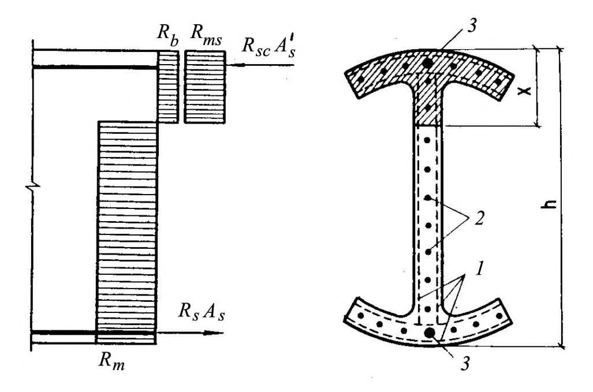
1 - сетки; 2 - стержневая или проволочная арматура, приведенная к равномерно распределенной по сечению элемента;
- 2 - сосредоточенная стержневая или проволочная арматура Рисунок 6.1 - Схема внутренних усилий и эпюра напряжений в сечении, нормальном к продольной оси элемента, при расчете по прочности
где ε s,el - относительная деформация арматуры растянутой зоны, которую следует определять по формулам: для арматуры с условным пределом текучести
где σ sp - предварительное напряжение в арматуре с учетом всех потерь и γ sp = 0,9; 400, МПа; для сеток
для ненапрягаемой арматуры с физическим пределом текучести
где ε b 2 - относительная деформация сжатого бетона при напряжениях, равных Rb , принимаемая в соответствии с указаниями СП 63.13330.
Изгибаемые элементы прямоугольного, таврового, двутаврового и кольцевого сечений
при этом высоту сжатой зоны х определяют по формуле
m 1 - принимают согласно 6.1.2.
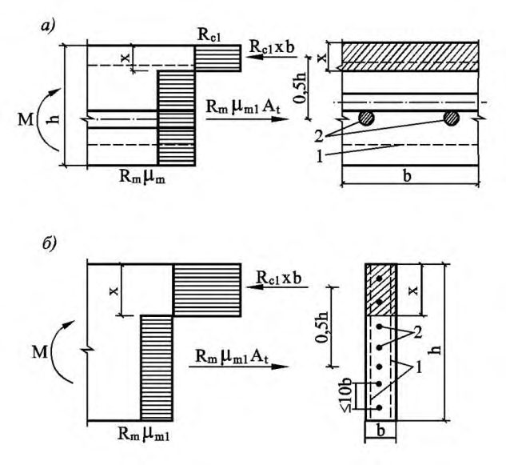
а - при b h ; б - при b h ; 1 - сетки; 2 - стержневая или проволочная арматура, приведенная к равномерно распределенной по сечению элемента Рисунок 6.2 - Схема усилий и эпюра напряжений в изгибаемых элементах прямоугольного сечения
где Ас = хb, при этом высоту сжатой зоны бетона определяют по формуле
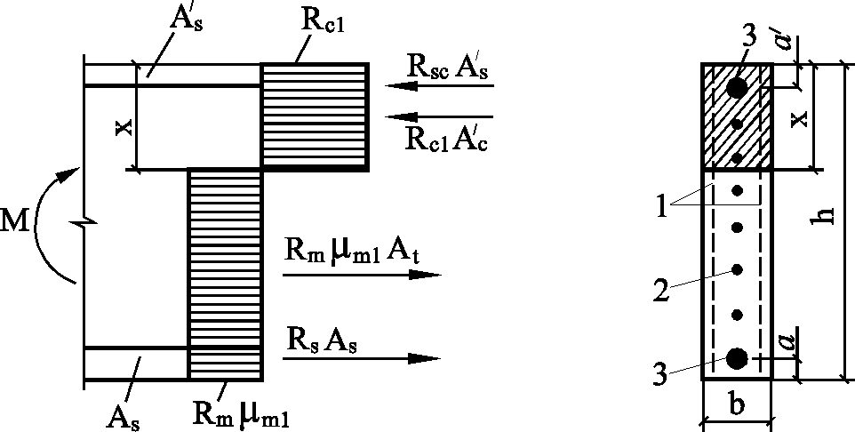
1 - сетки; 2 - стержневая или проволочная арматура, приведенная к равномерно распределенной по сечению элемента; 3 - сосредоточенная стержневая или проволочная арматура
Рисунок 6.3 - Схема усилий и эпюра напряжений в изгибаемых элементах прямоугольного сечения с сосредоточенной стержневой и проволочной арматурой
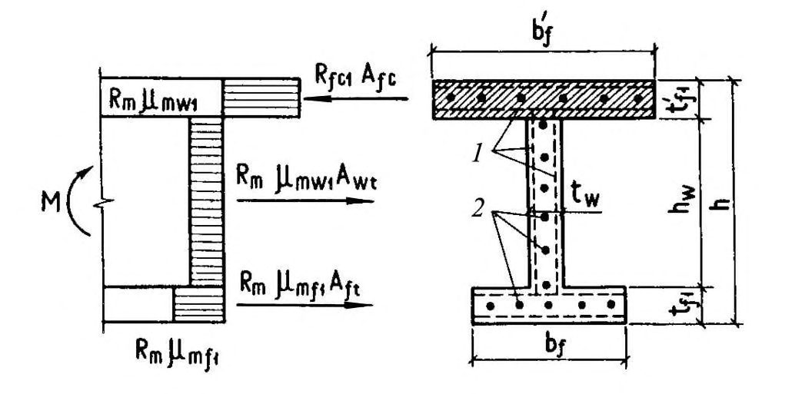
1 - сетки; 2 - стержневая или проволочная арматура, приведенная к равномерно распределенной по сечению
Рисунок 6.4 - Схема усилий и эпюра напряжений в изгибаемых элементах двутаврового сечения при х t f б) если граница сжатой зоны проходит в ребре (см. рисунок 6.5), т. е. (6.9) не соблюдают, расчет выполняют по формуле
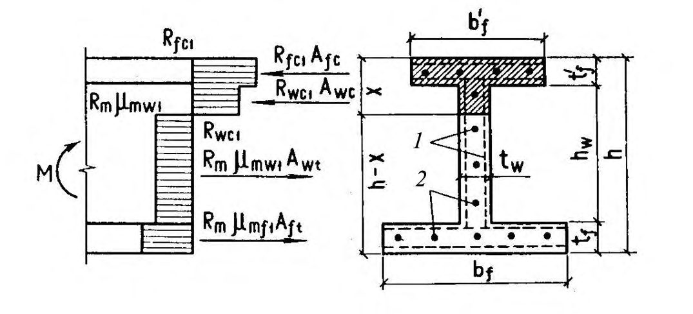
1 - тонкие сетки; 2 - стержневая или проволочная арматура, приведенная к равномерно распределенной по сечению
Рисунок 6.5 - Схема усилий и эпюра напряжений в изгибаемых элементах двутаврового сечения при х t f
Высоту сжатой зоны х определяют по формуле
В формулах (6.9) - (6.12) :
Коэффициенты приведенного армирования стенки mw 1, сжатой полки mf 1 и растянутой полки mf 1 принимают в соответствии с 6.1.2.
прочность сечения определяют по формуле
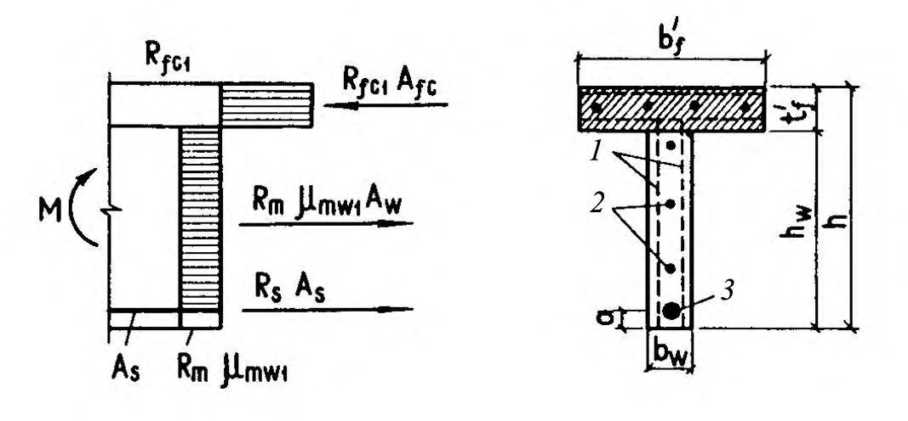
1 - тонкие сетки; 2 - стержневая или проволочная арматура, приведенная к равномерно распределенной по сечению элемента; 3 - сосредоточенная стержневая или проволочная арматура
Рисунок 6.6 - Схема усилий и эпюра напряжений в изгибаемых элементах таврового сечения с полкой в сжатой зоне при х t f б) если граница сжатой зоны выходит за пределы полки (см. рисунок 6.7), т. е. формула (6.13) не выполнено, прочность сечения определяют по формуле
при этом высоту сжатой зоны х определяют по формуле
В формулах (6.13) - (6.16):
Коэффициенты приведенного армирования mf1 , mf1 и mw1 принимают согласно 3.2.
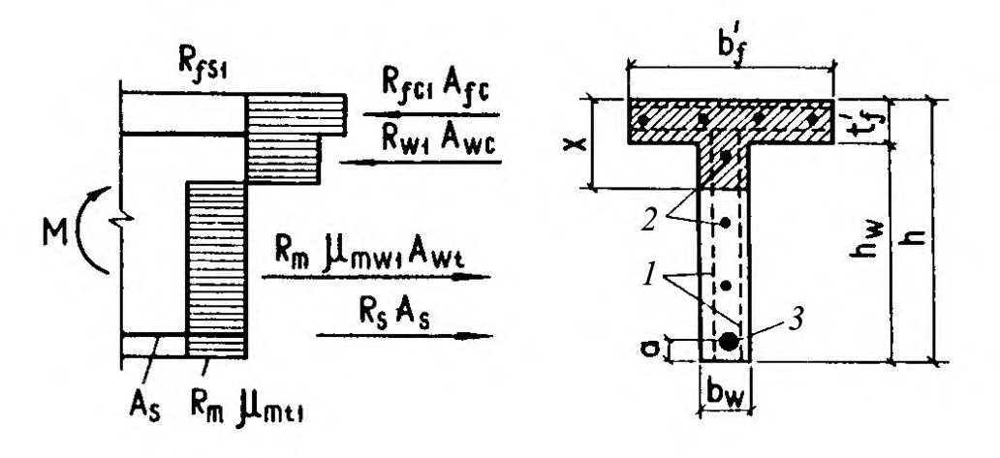
1 - тонкие сетки; 2 - стержневая или проволочная арматура, приведенная к равномерно распределенной по сечению элемента; 3 - сосредоточенная стержневая или проволочная арматура
Рисунок 6.7 - Схема усилий и эпюра напряжений в изгибаемых элементах таврового сечения с полкой в сжатой зоне при х t f где
0,1
СП 96.13330.2016
.
M
A
R cr
R sin cr
cir cir
=
R
= b
R b mc
R
+
+
mc
R mr
R
+ m
( mr mr
3,35 m
R
, mr
rm - радиус срединной поверхности стенки кольцевого элемента, равный r m
+
=
,
(6.20) re , ri - радиусы наружной и внутренней граней кольцевого сечения соответственно; б) при Rm mr 1 0,38 Rcr 1 из условия
M
cir
A r
= sin
R
cr
0,73
R
R
cir
mr m
R
; m mr
+ b
Rcr
= Rb + Rmc
mr
. r i r e r
+
,
0,234
1,35
R m
mr cir
1,6
) r m
; cir
r m
;
(6.17)
(6.18)
(6.19)
(6.21)
(6.22)
(6.23)
СП 96.13330.2016
Рисунок 6.8 - Схема кольцевого сечения, принимаемая в расчете по прочности армоцементных элементов
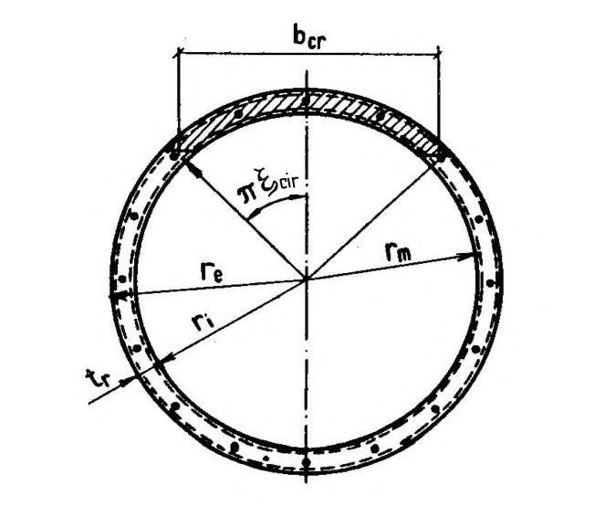
Внецентренно сжатые элементы прямоугольного, таврового, двутаврового и кольцевого сечений
при этом высоту сжатой зоны х определяют по формуле
В формулах (6.24) и (6.25): et - расстояние от точки приложения продольной силы до растянутой грани сечения;
Ac, At - площади сечений соответственно сжатой и растянутой зон сечения;
S b - статический момент площади сжатой зоны бетона относительно точки приложения продольной силы N ;
S m 1 - статический момент площади сжатой приведенной арматуры (см. 6.1.2) относительно той же точки;
Sm 1 - статический момент площади растянутой приведенной арматуры относительно той же точки;
где Nc -несущая способность центрально сжатого элемента, определяемого по формуле: здесь
Nin - несущая способность сечения, в котором высоту сжатой зоны бетона принимают равной х = Rh и определяют по формуле
e 0 - эксцентриситет продольной силы относительно центра тяжести приведенного сечения, равный e 0 = M/N; ein - эксцентриситет продольной расчетной силы Nin , определяемый по формуле
если x t f (см. рисунок 6.9) по формуле
высоту сжатой зоны бетона определяют по формуле (6.25);
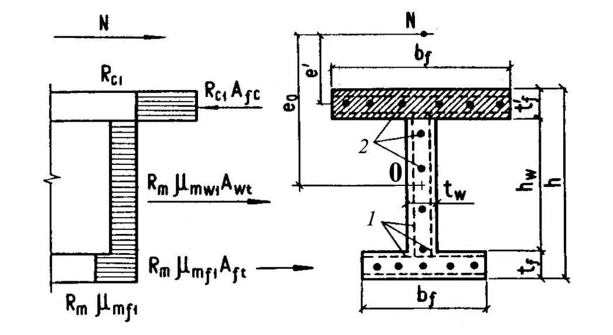
1 - тонкие сетки; 2
- стержневая или проволочная арматура, приведенная к равномерно распределенной по сечению элемента
Рисунок 6.9 - Схема усилий и эпюра напряжений во внецентренно сжатых элементах двутаврового сечения при х t f если х t f (см. рисунок 6.10) из условия
где высоту сжатой зоны х определяют по формуле (6.25);
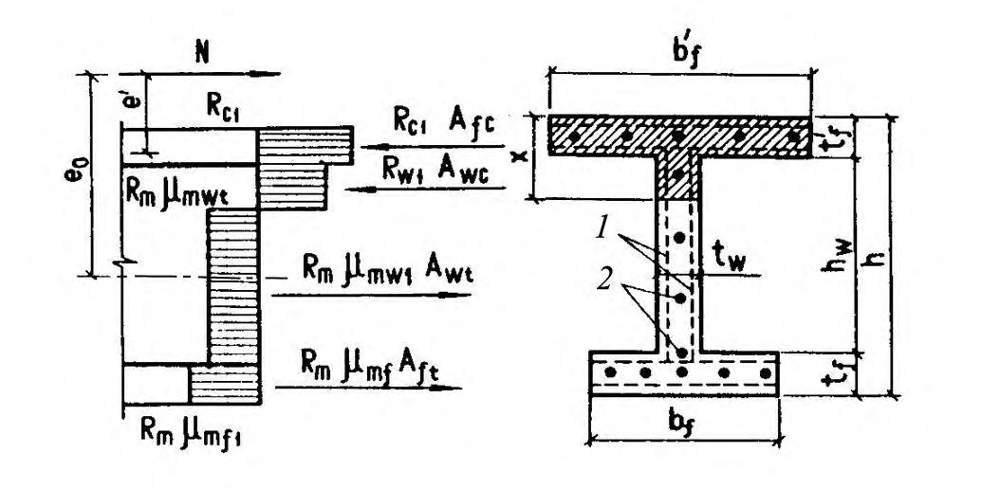
1 - тонкие сетки; 2
- стержневая или проволочная арматура, приведенная к равномерно распределенной по сечению элемента
Рисунок 6.10 - Схема усилий и эпюра напряжений во внецентренно сжатых элементах двутаврового сечения при x t f
где здесь при х t f при х > t f здесь
* с
= f f c y h t b
R
S
;
f t
СП 96.13330.2016
S
* t f t
;
f f mf m y 0 - расстояние от центра тяжести приведенного сечения до растянутой или менее сжатой грани; при х t f
Влияние прогиба элемента учитывают путем умножения значения e 0 на коэффициент , вычисляемый по указаниям СП 63.13330.
В формулах (6.30) - (6.34) приняты обозначения такие же, как и в п. 6.1.9.
при этом величину относительной площади сжатой зоны бетона определяют по формуле
Если полученное из расчета по формуле (6.38) значение cir 0,15, в формулу (6.37) подставляют значение cir , определяемое по формуле
В формуле (6.37)
=
R
Rr
=
Rb + Rm
mr
.
Значение величины mr 1 определяют с использованием рекомендаций п. 6.1.2.
b t y
Центрально растянутые элементы
Внецентренно растянутые элементы
где - коэффициент снижения несущей способности при внецентренном растяжении, принимаемый равным 0,8;
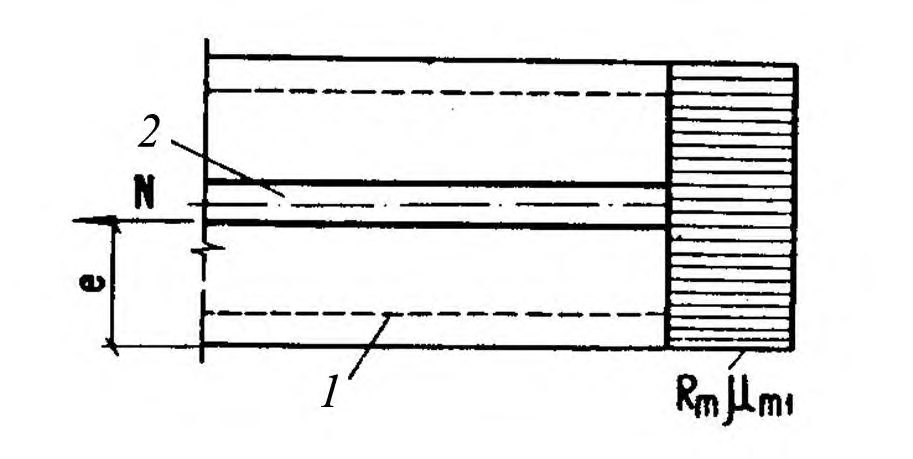
1 - сетки; 2 - стержневая или проволочная арматура
Рисунок 6.11 - Эпюра напряжений во внецентренно растянутых элементах прямоугольного сечения при приложении продольной силы N в пределах
сечения
б) если продольная сила N приложена между ядром сечения и наружной гранью сечения по условию (6.41), где принимают равным 0,6; в) если продольная сила N приложена за пределами сечения (см. рисунок 6.12) - по формуле
при этом высота сжатой зоны х определяют по формуле
1 - сетки; 2 - стержневая или проволочная арматура Рисунок 6.12 - Эпюра напряжений во внецентренно растянутых элементах прямоугольного сечения при приложении продольной силы N за пределами сечения
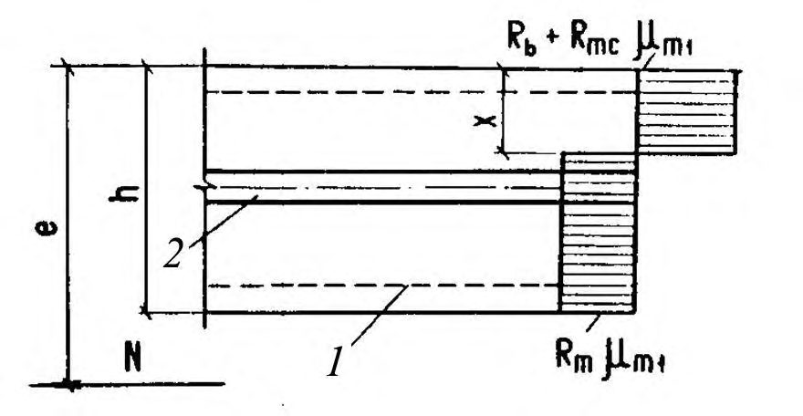
Если полученное из расчета по формуле (6.43) значение х Rh , то в условие (6.42) подставляется значение х = Rh.
Расчет по прочности сечений, наклонных к продольной оси элемента
При расчете по модели наклонных сечений должны быть обеспечены прочность элемента по полосе между наклонными сечениями и наклонному сечению на действие поперечных сил, а также прочность по наклонному сечению на действие момента.
Коэффициент w 1, учитывающий влияние поперечных проволок сеток, определяют по формуле
Коэффициент b 1 определяют по формуле
где значение Rb принимают в мегапаскалях, МПа.
где Q - поперечная сила, определяемая внешней нагрузкой, расположенной по одну сторону от рассматриваемого наклонного сечения;
Qm - поперечная сила, воспринимаемая поперечными проволоками сетки в наклонном сечении;
Qb - поперечная сила, воспринимаемая бетоном сжатой зоны в наклонном сечении.
Значения Qm определяют по формуле
где aq - проекция наклонного сечения с углом наклона, равным 45 о ; qmw - интенсивность армирования элемента поперечными проволоками сеток в пределах наклонного сечения:
здесь mw 1 - коэффициент приведенного армирования стенки при расчете на поперечную силу, определяемый по формуле
Amw площадь сечения поперечных проволок сеток, расположенных в пределах наклонного сечения;
Asw - площадь сечения поперечных стержней, расположенных в пределах наклонного сечения; t w - толщина стенки, воспринимающей поперечную силу;
- угол наклона стенки складчатого элемента к вертикальной оси сечения элемента.
Значение поперечной силы Qb для изгибаемых и внецентренно сжатых элементов определяют по формуле
где t w и h - соответственно ширина и высота элемента в рассчитываемом сечении.
В том случае, когда граница сжатой зоны располагается в пределах полки, допускается принимать aq = hw.
Рисунок 6.13 - Схема усилий в сечении, наклонном к продольной оси, при расчете по прочности на действие поперечной силы
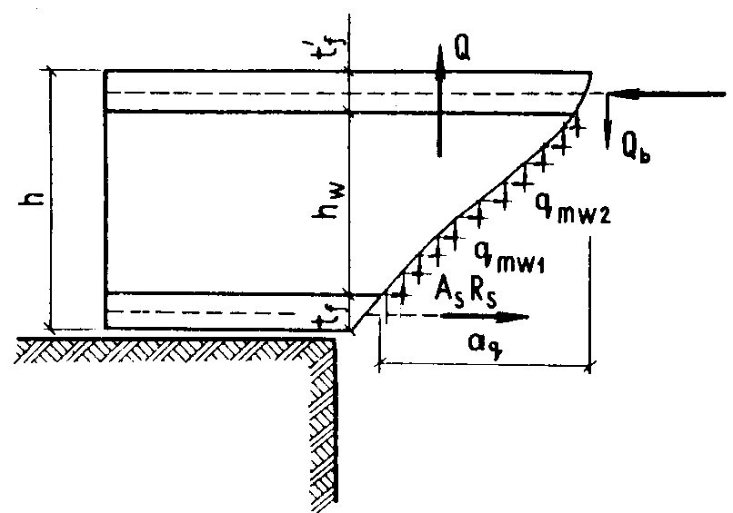
где М - момент всех внешних сил, расположенных по одну сторону от рассматриваемого наклонного сечения относительно оси, проходящей через точку приложения равнодействующей усилий в сжатой зоне и перпендикулярной плоскости действия момента.
Высоту сжатой зоны в наклонном сечении, измеренная по нормали к продольной оси элемента, определяют из условия равновесия проекций усилий в бетоне и арматуре наклонного сечения на продольную ось элемента. Проверку на действие изгибающего момента не производят для наклонных сечений, пересекающих растянутую грань элемента на участках, где не образуются нормальные трещины, т. е. там, где момент М от внешней нагрузки, на которую ведется расчет по прочности, меньше или равен моменту трещинообразования Мcrc , определяемому по СП 63.13330, с заменой Rbt,ser на Rbt.
6.2Расчет армоцементных конструкций по предельным состояниям второй группы
Расчет по образованию и раскрытию трещин
- нормальных к продольной оси элемента;
- наклонных к продольной оси элемента.
Расчет по раскрытию трещин производят по формуле
где acrc -ширина раскрытия трещин от действия внешней нагрузки, определяемая согласно 6.2.4-6.2.7; acrc,ult -предельно допустимая ширина раскрытия трещин (см. таблицу 1).
Ширину продолжительного раскрытия трещин определяют по формуле
а ширину непродолжительного раскрытия трещин - по формуле
СП 96.13330.2016
где acrc 1 -ширина раскрытия трещин от продолжительного действия постоянных и временных длительных нагрузок; acrc 2 -ширина раскрытия трещин от непродолжительного действия постоянных и временных (длительных и кратковременных) нагрузок; acrc 3 - ширина раскрытия трещин от непродолжительного действия постоянных и временных длительных нагрузок.
Расчет по раскрытию трещин, нормальных к продольной оси элемента
где m - коэффициент, принимаемый равным при сетках: сварных - 3, тканых - 3,5;
l - коэффициент, принимаемый равным при учете:
- кратковременных и непродолжительного действия постоянных и длительных нагрузок - 1;
- многократно повторяющихся, а также продолжительного действия постоянных и длительных нагрузок для бетона группы А на песке с модулем крупности свыше 2,0 - 1,5; с модулем крупности 2,0 и ниже - 1,7; группы Б 1,65;
m - напряжение в сетках у растянутой грани сечения от действия нагрузки определяют согласно п. 6.2.6;
Em - модуль упругости сетки, принимаемый согласно п. 5.2.8;
Sm размер ячейки сетки, мм.
СП 96.13330.2016 где - коэффициент, принимаемый равным для изгибаемых и внецентренно сжатых элементов, - 1, растянутых - 1,2;
m - коэффициент, зависящий от величины коэффициента приведенного сетчатого армирования растянутой зоны элемента и принимаемый:
m - коэффициент, принимаемый равным при сетках: сварных - 0,8, тканых - 1;
m 1 - коэффициент, принимаемый не более 0,02; ds - диаметр стержневой или проволочной арматуры, мм;
Em 1 -приведенный модуль упругости арматуры, определяемый по формуле
s -коэффициент, учитывающий неравномерное распределение относительных деформаций растянутой арматуры между трещинами, определяемый по указаниям пункта 8.2.15 СП 63.13330.2012; l s - базовое (без учета влияния вида поверхности арматуры) расстояние между смежными нормальными трещинами, определяемое согласно пункту 8.2.17 СП 63.13330.2012.
где Р - усилие предварительного напряжения с учетом всех потерь;
Ab - площадь сечения бетона; б) для изгибаемых, внецентренно сжатых или внецентренно растянутых элементов - по правилам строительной механики как для упругого тела.
В расчете m следует рассматривать сечение, приведенное к эквивалентному стальному сечению (рисунок 6.14), с единой упругой характеристикой; в растянутой зоне к стальному сечению приводится только арматура с эквивалентной площадью сечения, а в сжатой зоне - арматура и бетон с эквивалентными площадями сечения (бетон - с учетом соотношения модулей упругости). а - сечение армоцементного элемента; б - сечение, приведенное к стальному Рисунок 6.14 - Схема приведения сечения армоцементных элементов к стальному
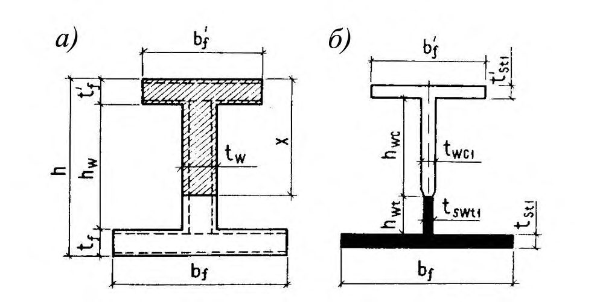
Значение m определяют:
- для изгибаемых элементов по формуле
- для внецентренно сжатых и внецентренно растянутых элементов по формуле
В формулах (6.60) - (6.61):
Ws 1 -момент сопротивления приведенного к стальному сечения определяют по формуле
где I s 1 - момент инерции сечения, приведенного к эквивалентному стальному сечению, относительно его центра тяжести;
Ntot - равнодействующая продольной силы N и усилия предварительного обжатия Р ; e 0 Р - эксцентриситет приложения силы Р относительно центра тяжести сечения элемента; е 0 ,tot - эксцентриситет усилия Ntot относительно центра тяжести сечения; r - расстояние от ядровой точки, ближайшей к сжатой грани сечения.
В формуле (6.61) знак «минус» принимают при внецентренном сжатии, а знак «плюс» - при внецентренном растяжении.
Расчет по раскрытию трещин, наклонных к продольной оси элемента
где k 1 - коэффициент, принимаемый при сетках:
- тканых - (30 - 1500 m 1) 10 2 ,
- сварных - (20 - 1200 m 1) 10 2 ; dm - диаметр проволок сеток, расположенных по нормали к продольной оси элемента;
где Q - наибольшая поперечная сила на рассматриваемом участке длины элемента от действующей нагрузки;
Np - продольная сила в элементе от предварительного обжатия.
Расчет элементов армоцементных конструкций по деформациям
Расчет по деформациям следует производить на действие:
СП 96.13330.2016
- постоянных, временных длительных и кратковременных нагрузок при ограничении деформаций технологическими или конструктивными требованиями;
- постоянных и временных длительных нагрузок при ограничении деформаций эстетическими требованиями.
Значения предельно допустимых деформаций элементов принимают согласно СП 20.13330 и нормативным документам на отдельные виды конструкций.
Деформации (прогибы, углы поворота) элементов армоцементных конструкций следует вычислять по формулам общих правил строительной механики с определением входящих в них значений жесткости и кривизны в соответствии с 6.2.9-6.2.14.
Значения кривизны и деформации армоцементных элементов отсчитывают от их начального состояния; при наличии предварительного напряжения арматуры - от состояния до обжатия элемента.
Элементы или части элементов рассматривают без трещин в растянутой зоне, если трещины не образованы при действии постоянных, длительных и кратковременных нагрузок, нагрузки вводятся в расчет с коэффициентом надежности по нагрузке f = 1.
где Eb модуль упругости бетона, принимаемый по указаниям СП 63.13330;
I 1 - момент инерции армированного сечения, приведенного к бетонному, с учетом коэффициентов сетчатого армирования в соответствии с соотношением модулей Es /Em .
Приведенные коэффициенты армирования для расчета деформаций определяют по формулам:
Определение кривизны на участках без трещин в растянутой зоне
где 2 1 1 , 1 r r - кривизны соответственно от непродолжительного действия кратковременных нагрузок и от продолжительного действия постоянных и длительных временных нагрузок (без учета усилия Р ), определяемые по формулам:
здесь М - момент от соответствующей внешней нагрузки относительно оси, нормальной к плоскости действия момента и проходящей через центр тяжести приведенного сечения;
Df 1 - определяют по формуле (6.65);
b , cr -коэффициент, учитывающий влияние длительной ползучести бетона и принимаемый согласно таблице 6.12 СП 63.13330.2012;
Df 2 -жесткость армоцементных конструкций при учете продолжительного действия нагрузки, принимаемая равной
1 1 p r -кривизна, обусловленная выгибом элемента от непродолжительного действия усилия предварительного обжатия и определяемая по формуле
2 1 p r - кривизна, обусловленная выгибом элемента вследствие усадки и ползучести бетона от усилия предварительного обжатия и определяемая по формуле
здесь b b , - относительные деформации бетона, вызванные его усадкой и ползучестью под действием усилия предварительного обжатия, определяемые соответственно на уровне растянутой и сжатой грани сечения по формулам:
Значение b принимают численно равным сумме потерь предварительного напряжения арматуры от усадки и ползучести бетона по указаниям СП 63.13330 - для арматуры растянутой зоны, а b - то же самое, для напрягаемой арматуры, если бы она имелась на уровне крайнего сжатого волокна бетона.
Значения кривизны 1 1 p r и 2 1 p r для элементов без предварительного напряжения допускается принимать равными нулю.
Определение кривизны на участках с трещинами в растянутой зоне
где 1 1 r - кривизна от непродолжительного действия всей нагрузки, на которую производят расчет по деформациям;
длительных нагрузок;
3 1 r - кривизна от продолжительного действия постоянных и длительных нагрузок;
где М - момент от всей внешней нагрузки относительно оси, нормальной к плоскости действия момента и проходящей через центр тяжести приведенного сечения;
Мcrc - момент, воспринимаемый сечением, нормальным к продольной оси элемента, при образовании трещин;
Df 1 - определяют по формуле (6.65);
Df 3 - определяют по формуле
здесь k - коэффициент, учитывающий снижение жесткости элемента и принимаемый по таблице 7.
Значение Мcrc определяют по формулам: для элементов без предварительного напряжения арматуры
для предварительно напряженных элементов
где Wpl - упругопластический момент сопротивления сечения для крайнего растянутого волокна бетона, определяемый с учетом положений пункта 8.2.10 СП 63.13330.2012.
Таблица 7 - Коэффициент, учитывающий снижение жесткости элемента
| Коэффициент k для элементов | Коэффициент k для элементов | ||
|---|---|---|---|
| Армирование растянутой зоны сечения | Коэффициент армирования m 1 ,% | изгибаемых и растянутых | внецентренно сжатых |
| Сетчатое при сетках: | |||
| - тканых | Не более 1,5 От 1,5 до 3 | 0,08 0,16 | 0,16 0,32 |
| - сварных | Не более 1,5 От 1,5 до 3 | 0,1 0,2 | 0,2 0,4 |
| Комбинированное при сетках: - тканых - сварных | Не более 1,5 Не более 1,5 | 0,08 0,1 | 0,16 0,2 |
| - тканых | От 1,5 до 3 | 0,1 | 0,22 |
| - сварных | 0,12 | 0,25 |
Значение Мр в зависимости (6.79) определяется по формуле
В формуле (6.79) знак «плюс» следует принимать, когда направления моментов Mcrc и Мр противоположны, знак «минус» - когда направления совпадают.
В формуле (6.82):
Мр - момент усилия P относительно оси, параллельной нулевой линии и проходящей через ядровую точку, наиболее удаленную от растянутой зоны, трещиностойкость которой нужно определить; значение Мр определяют по указаниям СП 63.13330.
r
, ser
M
D f
M
0,8
ser
D f r где Mser - момент от постоянных и длительных нагрузок относительно оси, нормальной к плоскости действия момента и проходящей через центр тяжести приведенного сечения;
3 f D - определяют по формуле (6.77).
Определение прогибов
где x M - изгибающий момент в сечении х от действия единичной силы, приложенной по направлению искомого перемещения элемента в сечении х по длине пролета, для которого определен прогиб; x r 1 - полная величина кривизны элемента в сечении х от нагрузки, при которой определен прогиб; величину x r 1 определяют по формулам (6.67) и (6.75); знак кривизны принимают в соответствии с эпюрой кривизны.
Для элементов постоянного сечения, имеющих трещины на каждом участке, в пределах которого изгибающий момент не меняет знака, кривизну
=
=
(6.81)
(6.82)
,
СП 96.13330.2016 допускается вычислять для наиболее напряженного сечения, принимая кривизну для остальных сечений такого участка изменяющейся пропорционально значениям изгибающего момента.
Для некоторых наиболее распространенных случаев нагружения прогиб изгибаемого элемента постоянного сечения можно определять по формуле
где m - коэффициент, принимаемый в зависимости от условий опирания и схемы нагружения; r 1 - кривизна в сечении с наибольшим изгибающим моментом от нагрузки, при которой определен прогиб; l - расчетный пролет элемента.
7Конструктивные требования
Конструирование армоцементных конструкций, армированных композитными сетками и/или стержневой композитной арматурой, следует выполнять по специальным указаниям.
Минимальные размеры сечений элементов
Утолщения свыше 40 мм (контурные ребра, ребра жесткости, диафрагмы и т. п.) допускается выполнять без сеток в соответствии с указаниями СП 63.13330 для железобетонных конструкций.
В пределах участка конструкций, где отсутствует сетчатое армирование, требования в части толщины защитного слоя и ширины раскрытия трещин принимают как для железобетонных конструкций.
Защитный слой бетона
- совместной работы арматуры и бетона;
- защиты арматуры от коррозии на всех стадиях изготовления, монтажа и эксплуатации;
- огнестойкости конструкции (совместно с конструкционной огнезащитой).
Проектная толщина защитного слоя бетона в армоцементных конструкциях должна быть не менее:
- для сетки - 4 мм;
- для стержневой и проволочной арматуры при наличии сеток в пределах защитного слоя бетона - 8 мм.
Толщину защитного слоя бетона следует принимать с учетом требований по технологии изготовления конструкций.
СП 96.13330.2016
Концы напрягаемой арматуры, а также анкеры необходимо защищать слоем мелкозернистого бетона не менее 5 мм.
Армирование элементов
Изгибаемые элементы прямоугольного сечения допускается армировать в растянутой зоне одной или несколькими сетками.
Армоцементные элементы с конструктивным армированием допускается армировать одной сеткой, расположенной в средней части сечения элемента.
В армоцементных элементах на толщине 10 мм применять более четырех сеток не допускается.
СП 96.13330.2016 равномерно по сечению, предусматривая установку большого количества стержней меньшего диаметра при минимальных расстояниях между ними не менее 10 мм.
Арматуру следует предусматривать таким образом, чтобы при том же расходе металла количество классов и диаметров арматуры было минимальным.
Арматура должна допускать ее укладку в форму в соответствии с принятой технологией:
- готовыми пакетами до укладки бетона;
- отдельными сетками в процессе формования.
При наличии сосредоточенных нагрузок по краям плиты армирование и утолщение должны быть выполнены по расчету.
Особенности армирования внецентренно сжатых элементов
В перегибе сеток рекомендуется установка стержня.
Особенности армирования изгибаемых элементов
Стержневую и проволочную арматуру диаметром 8 мм и более, а также канаты диаметром свыше 6 мм допускается предусмотреть только в ребрах элемента.
Минимальное расстояние между стержнями арматуры
Анкеровка ненапрягаемой арматуры
- длина опорного участка плиты l sup должна быть не менее 3 t и не менее 40 мм (где t - толщина плиты);
- длина запуска арматуры за грань опоры l sup 1 должна быть не менее 20 dm для сварных сеток и 30 dm -для тканых сеток; при комбинированном армировании - 15 ds .
Рисунок 7.1 - Схема свободного опирания плоских изгибаемых элементов
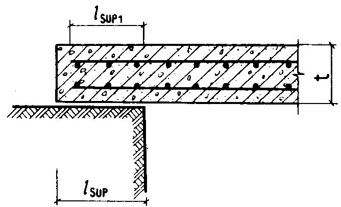
Участок сетки, заходящей за грань свободной опоры, должен иметь не менее двух поперечных анкерующих стержней.
СП 96.13330.2016
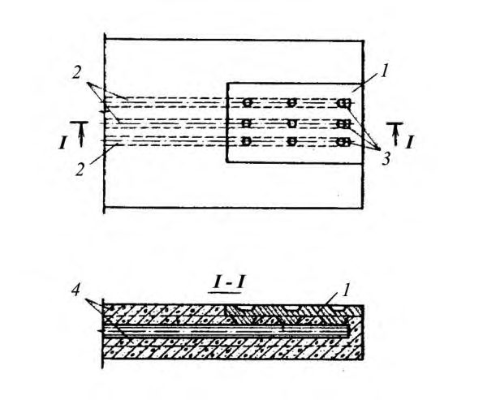
1 - пластина (рифленая в местах контактной сварки); 2 - рабочие стержни ненапрягаемой арматуры;
3 - место точечной электросварки; 4 - сетки
Рисунок 7.2 - Приварка к концам стержней анкерующих пластин или закладных деталей
Стыки сетчатой и стержневой арматуры
В местах соединения сеток в рабочем направлении в каждой из стыкуемых сеток по длине нахлестки должно располагаться для сеток: сварных - не менее четырех поперечных проволок, приваренных ко всем продольным стержням сетки; тканых - не менее шести поперечных проволок.
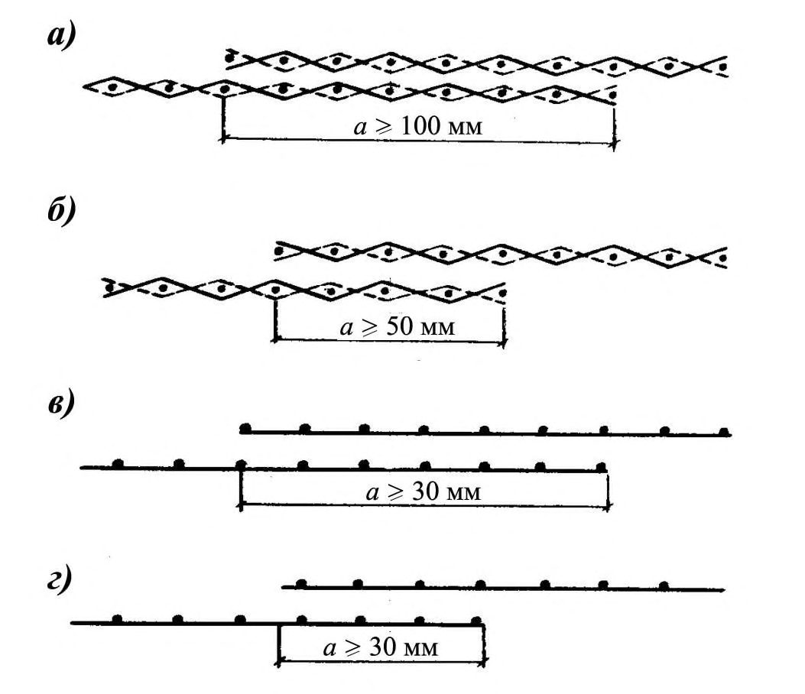
а) - стыки растянутых тканых сеток в рабочем направлении; б) - то же, конструктивные стыки; в) - стыки растянутых сварных сеток в рабочем направлении; г)
- то же, конструктивные стыки
Рисунок 7.3 - Стыки сеток, выполняемые внахлестку
Закладные детали
Закладные детали следует изготовлять из рифленых штампованных пластин толщиной не менее 5 мм с приваркой их контактной электросваркой к арматурным изделиям, а также к анкерным стержням диаметром 3-6 мм (см. рисунок 7.2).
Стыки сборных элементов
В тех случаях, когда передача усилий в стыках осуществлена через закладные детали, анкерные стержни закладных деталей должны быть равнопрочными с прерываемой в стыке стержневой и проволочной арматурой и сетками соединяемых элементов.
Стыки сборных элементов рекомендуется предусмотреть одним из следующих способов: а) установка диафрагм около торцов элементов и сварка стальных закладных деталей накладными пластинками, пропускаемыми через отверстия в диафрагмах, с последующим замоноличиванием стыка; б) устройство контурных ребер, дуговая сварка выпусков стержневой и проволочной арматуры и дуговая сварка закладных деталей стыкуемых элементов и ребер (см. рисунок 7.4, а) с последующим замоноличиванием стыка; в) соединение элементов с помощью преднапряженных стержней (см. рисунок 7.4, б) с замоноличиванием шва для предварительно напряженных конструкций, а также стыкуемых насухо или с промазкой торцов стыкуемых элементов эпоксидным компаундом; г) применение сквозной стержневой и проволочной арматуры, в том числе напрягаемой, в сборно-монолитных конструкциях.
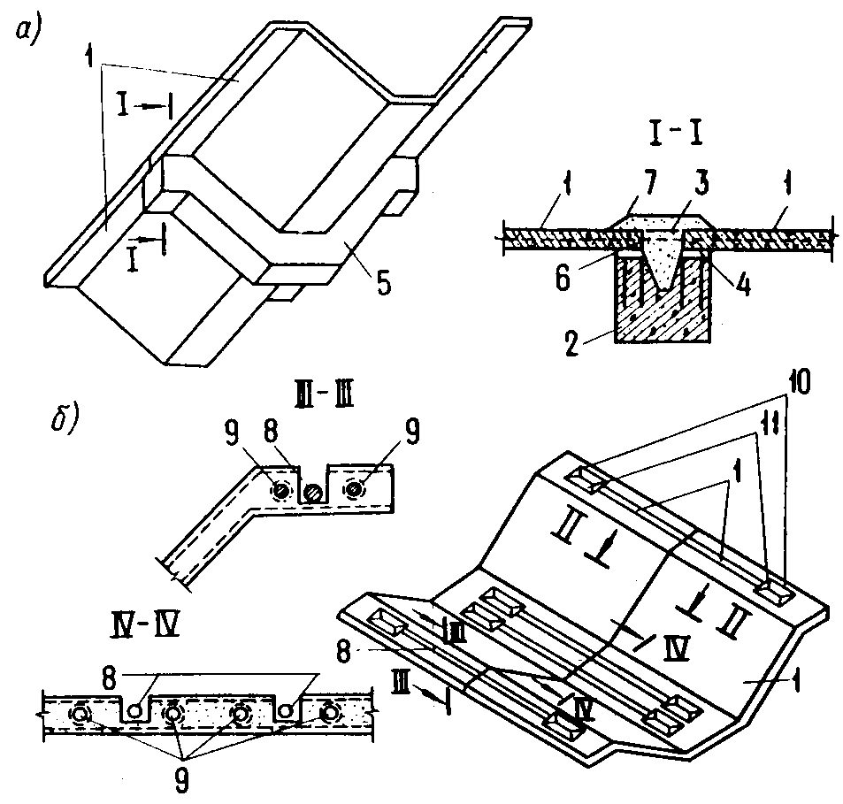
а) - стык, выполняемый с контурной диафрагмой сваркой стальных деталей и выпусков арматуры с последующим замоноличиванием; б) - стык, выполняемый с натяжением арматуры; 1 - складчатый элемент; 2 - диафрагма; 3 - стальные накладные пластины; 4 - закладные детали; 5 - контурная диафрагма; 6 - выпуски арматуры; 7 - бетон замоноличивания; 8 - стыковая напрягаемая арматура; 9 - продольная напрягаемая арматура; 10 - анкер на стыковом стержне; 11 - анкерная колодка Рисунок 7.4 - Стыки складчатых сборных армоцементных конструкций, работающих на внецентренное сжатие и поперечную силу
Дополнительные указания по конструированию предварительно напряженных элементов
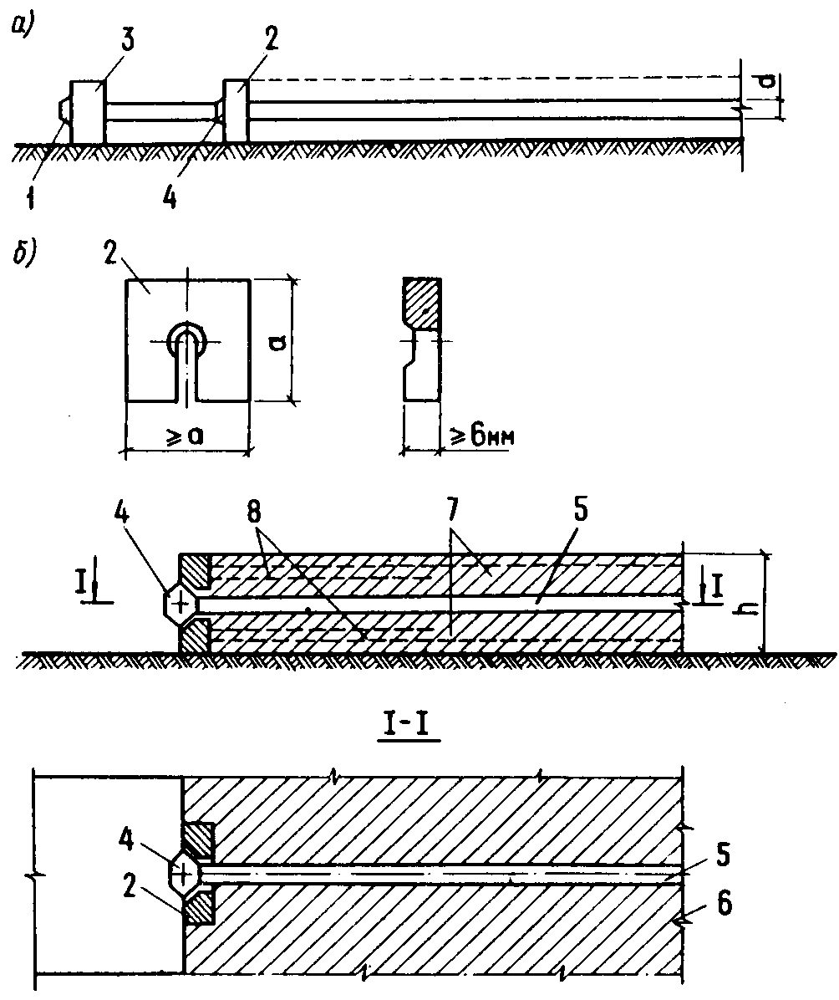
а) - напрягаемая арматура, заанкеренная на упорах формы; б) - элемент после отпуска предварительного напряжения арматуры; 1 - высаженная головка на конце проволоки; 2 - анкерная шайба с прорезью; 3 - неподвижный анкерный упор; 4 - промежуточная высаженная головка; 5 - проволока;
6 - предварительно напряженный элемент; 7 - основные сетки;
8 - дополнительные сетки
Рисунок 7.5 - Схема анкеровки напрягаемой арматуры
АПриложение А. Основные буквенные обозначения
Усилия от внешних нагрузок и воздействий в поперечном сечении элемента и от предварительного напряжения
М - изгибающий момент;
- Mcrc - момент, воспринимаемый сечением, нормальным к продольной оси элемента, при образовании трещин;
- Mp - момент усилия P относительно оси, параллельной нулевой линии и проходящей через ядровую точку, наиболее удаленную от растянутой зоны, трещиностойкость которой нужно определить;
- Mser - момент от постоянных и длительных нагрузок относительно оси, нормальной к плоскости действия момента и проходящей через центр тяжести приведенного сечения;
N - продольная сила;
Np - продольная сила в элементе от предварительного обжатия;
- Ntot -равнодействующая продольной силы N и усилия предварительного напряжения с учетом всех потерь P ;
- Q - наибольшая поперечная сила;
- Qb - поперечная сила, воспринимаемая бетоном сжатой зоны в наклонном сечении;
- Qm -поперечная сила, определяемая поперечными проволоками сетки в наклонном сечении;
- Р - усилие предварительного напряжения с учетом всех потерь.
Характеристики материалов
- Rb, Rb,ser -расчетные сопротивления мелкозернистого бетона сжатию соответственно для предельных состояний первой и второй групп;
- Rbt, Rbt,ser - расчетные сопротивления мелкозернистого бетона растяжению соответственно для предельных состояний первой и второй групп;
Rsc, Rs, Rspc, Rsp -расчетные сопротивления растяжению арматуры -соответственно обычной и преднапряженной;
- Rc 1 - расчетное приведенное сопротивление бетона сжатой зоны сечения;
- Rm -расчетное сопротивление стальных сеток растяжению для предельных состояний первой группы;
- Rmw -расчетное сопротивление стальных сеток растяжению при расчете сечений на поперечную силу в наклонных сечениях;
Rmc - расчетное сопротивление стальных сеток сжатию;
Eb -начальный модуль упругости мелкозернистого бетона при сжатии и растяжении;
Em - модуль упругости стальных сеток;
Em 1 - приведенный модуль упругости арматуры;
- отношение модулей упругости сетчатой арматуры Em и бетона Eb ; σ m - напряжение в сетках у растянутой грани сечения от действия нагрузки.
Геометрические характеристики
- Ab - площадь сечения бетона;
Ar - площадь кольцевого сечения;
A m, Am - площади сечения проволок сетки в сжатой и растянутой зонах;
- Amw - площадь сечения поперечных проволок сеток, расположенных в пределах наклонного сечения;
- Ac, At - площади сечений бетона соответственно сжатой и растянутой зон сечения;
- A s 1 , As 1 -площади сечения ненапрягаемой стержневой арматуры на данном участке поперечного сечения элемента соответственно в сжатой и растянутой зонах;
- A sp, Asp -площади напрягаемой стержневой арматуры на единицу ширины соответственно в сжатой и растянутой зоне;
- Asw -площадь сечения поперечных стержней, расположенных в пределах наклонного сечения;
- b b , - относительные деформации бетона;
- εb 2 - относительная деформация сжатого бетона при напряжениях, равных Rb ;
- ε s,el - относительная деформация арматуры растянутой зоны;
- m , ׳ m -коэффициенты сетчатого армирования, равные отношению площадей сечения сеток на единицу длины в растянутой и сжатой зонах соответственно к толщине элемента;
- коэффициенты армирования преднапряженной арматурой, равные отношению площадей сечения ненапрягаемой стержневой арматуры на данном участке поперечного сечения элемента в растянутой и сжатой зонах соответственно к толщине элемента;
s sp
m
,
,
,
s
, sp
m
- коэффициенты армирования преднапряженной арматурой;
- коэффициенты армирования, приведенные к сетчатому, соответственно для растянутой и сжатой зоны;
- mw 1 - коэффициент приведенного армирования стенки при расчете на поперечную силу;
- t f , t f -толщина соответственно сжатой и растянутой полок двутаврового сечения; b - ширина сечения;
- bfc, bf -ширина соответственно сжатой и растянутой полок двутаврового сечения; h - высота прямоугольного, таврового или двутаврового сечений; a
, a
- расстояния от равнодействующей сосредоточенной сжатой
A
A s p и растянутой As , Asp арматуры до ближайшей грани сечения; acrc - ширина раскрытия трещин от действия внешней нагрузки;
- acrc,ulf - предельно допустимая ширина раскрытия трещин;
- acrc 1 - ширина раскрытия трещин от продолжительного действия постоянных и временных длительных нагрузок;
- acrc 2 - ширина раскрытия трещин от непродолжительного действия постоянных и временных (длительных и кратковременных) нагрузок;
- acrc 3 - ширина раскрытия трещин от непродолжительного действия постоянных и временных длительных нагрузок
- aq - проекция наклонного сечения с углом наклона, равным 45°;
, s
- х - высота сжатой зоны бетона;
- - относительная высота сжатой зоны бетона, равная = x / h ;
- ein - ексцентриситет продольный расчетной силы Nin ;
- et -расстояние от точки приложения продольной силы до растянутой грани сечения;
- e 0 -эксцентриситет продольной силы N относительно центра тяжести приведенного сечения;
- e 0 p -эксцентриситет приложения силы P относительно центра тяжести сечения элемента;
- e 0 tot -эксцентриситет усилия Ntot относительно центра тяжести сечения;
- l - расчетный пролет элемента;
- l s - базовое расстояние между смежными нормальными трещинами;
- dm - диаметр проволок сварных, тканых и плетеных сеток; l
- пролет элемента;
- r - расстояние от ядровой точки, ближайшей к сжатой грани сечения;
- re, ri - радиусы наружной и внутренней граней кольцевого сечения соответственно;
- rm - радиус срединной поверхности стенки кольцевого элемента;
- ds - диаметр стержневой или проволочной арматуры;
- I 1 -момент инерции сечения, приведенного к бетонному, относительно его центра тяжести;
- Is 1 -момент инерции сечения, приведенного к эквивалентному стальному сечению, относительно его центра тяжести;
- Nc - несущая способность центрально сжатого элемента;
- Nin - несущая способность сечения, в котором высоту сжатой зоны бетона принимают равной x = ξ Rh ;
- Sʹb - статический момент площади сжатой зоны бетона относительно точки приложения продольной силы N ;
- Sʹm 1 - статический момент площади сжатой приведенной арматуры относительно точки приложения продольной силы N ;
- Sm 1 -статический момент площади растянутой приведенной арматуры относительно точки приложения продольной силы N ;
- Ws 1 - момент сопротивления растянутого волокна, приведенного к стальному;
- Wpl -упругопластический момент сопротивления сечения для крайнего растянутого волокна бетона;
- Df 1 - жесткость сечения элемента армоцементных конструкций при кратковременном действии нагрузки;
- Df 2 - жесткость сечения элемента армоцементных конструкций при действии нагрузок на участке, в пределах которого образуются трещины;
- D f 2 - жесткость сечения элемента армоцементных конструкций при действии эксплуатационной нагрузки;
- y 0 -расстояние до центра тяжести, приведенного сечения до растянутой или менее сжатой грани;
- σ sp - предварительное напряжение в арматуре с учетом всех потерь;
- γ -коэффициент снижения несущей способности при внецентренном растяжении;
- qmu -интенсивность армирования элемента поперечными проволоками сеток в пределах наклонного сечения;
- tw - толщина стенки, воспринимающей поперечную силу; - угол наклона стенки складчатого элемента к вертикальной оси сечения элемента; Sm - размер ячейки сетки; Ψ s -коэффициент, учитывающий неравномерное распределение относительных деформаций растянутой арматуры между трещинами; m - коэффициент, принимаемый в зависимости от условий опирания и схемы нагружения.
ПРИЛОЖЕНИЕ Б
Рекомендуемый сортамент тканых и сварных проволочных сеток для армоцементных конструкций
| Вид сеток | N сетки | Номинальный диаметр проволоки сетки, мм | Размер ячейки сетки в свету, мм | Площадь сечения одной проволоки, см² | Количество проволок на 1 м ширины сетки, шт. | Масса 1 м² сетки, кг | Коэффициент сетчатого армирования при одном слое на 10 мм толщины сечения элемента |
|---|---|---|---|---|---|---|---|
| Тканые сетки по ГОСТ 3826 | 6 | 0,7 | 6×6 | 0,00385 | 149 | 0,91 | 0,0058 |
| Тканые сетки по ГОСТ 3826 | 7 | 0,7 | 7×7 | 0,00385 | 130 | 0,79 | 0,0050 |
| Тканые сетки по ГОСТ 3826 | 8 | 0,7 1,2 | 8×8 | 0,00385 0,01131 | 115 109 | 0,7 2,03 | 0,0044 0,0123 |
| Тканые сетки по ГОСТ 3826 | 9 | 1,0 | 9×9 | 0,00785 | 100 | 1,26 | 0,0078 |
| Тканые сетки по ГОСТ 3826 | 10 | 1,0 | 10×10 | 0,00785 | 91 | 1,15 | 0,0071 |
| Тканые сетки по ГОСТ 3826 | 12 | 1,2 | 12×12 | 0,01131 | 76 | 1,42 | 0,0086 |
| Сварная сетка | 12,5 | 0,5 0,6 | 12,5×12,5 | 0,00196 0,00283 | 77 76 | 0,24 0,352 | 0,0015 0,0022 |
Библиография
- [1] СП 52-117-2008* Железобетонные пространственные конструкции покрытий и перекрытий. Методы расчета и конструирование